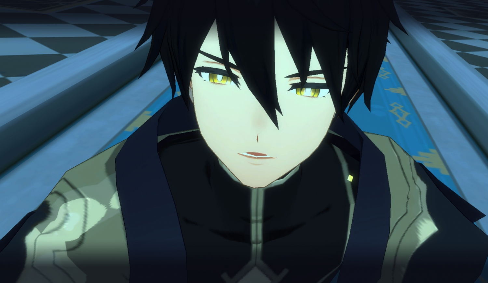

암요한
엘리트 스토리 1부 끝부분에 나와 모두의 멘탈을 와장창 깨트린 범인. 하드까지만 해도 늘 로드의 옆에 있는 게 당연한 캐릭터였는데 어째서인지 엘리트 시작에는 아발론에서 찾아볼 수 없어서 순간순간 로드가 불안초조해하는 모습을 보이게 만들었다. 알고보니...(스포)가 데려간 것이었고 그렇게 엘스 2부를 하염없이 기다리게 만들었다. 대사 한 마디도 없이 얼굴만 아주 잠시 나왔을 뿐인데 엄청난 인기를 얻은 것은 모두가 요한을 좋아한다는 게 아닐까. 로드광팬 빛요와 불요와는 어떤 다른 모습을 보여줄 지가 가장 큰 기대 요소.